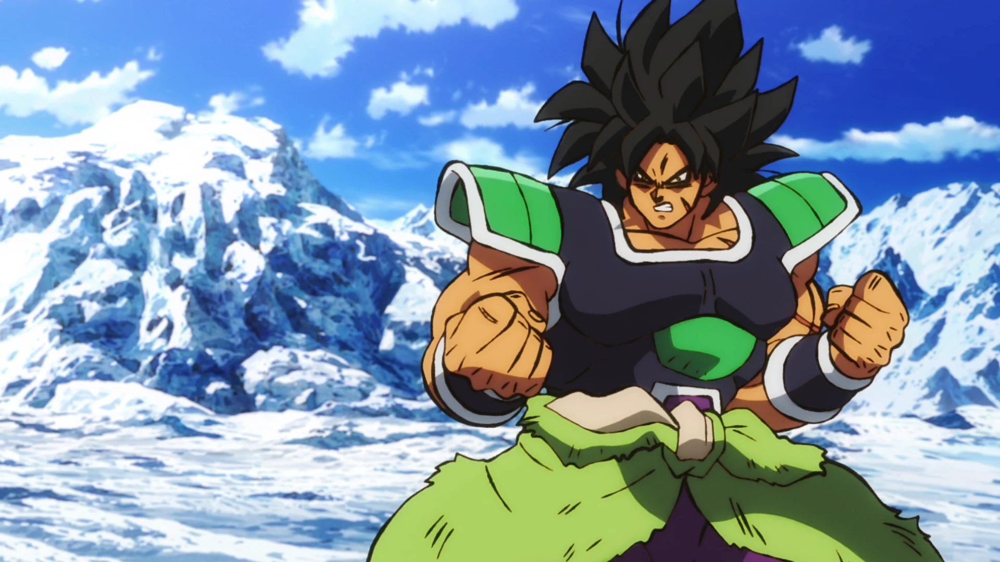
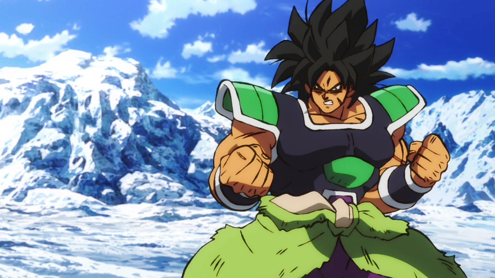

Goku
Goku é conhecido por sua personalidade otimista, espírito de luta inquebrável, e desejo incessante de se tornar mais forte para proteger seus amigos e a Terra. Goku também é reconhecido por suas técnicas de luta poderosas, como o Kamehameha, e por sua capacidade de se transformar em Super Saiyajin
vegeta
Vegeta desenvolve um profundo senso de honra e amor por sua família, embora nunca perca seu desejo de ser o mais forte. Conhecido por sua incrível força e habilidades de combate, Vegeta também é capaz de se transformar em Super Saiyajin, Suas técnicas de luta incluem o Galick Gun e o Final Flash
Gohan
Gohan é conhecido por suas habilidades de luta, como o Masenko e o Kamehameha, e mais tarde, pelo desenvolvimento de sua forma "Místico" ou "Gohan Definitivo," que desbloqueia todo o seu potencial sem a necessidade de se transformar em Super Saiyajin
Trunks
Trunks é um guerreiro extremamente habilidoso, apesar de sua idade relativamente jovem. Ele é corajoso, determinado e, como seu pai, tem um forte senso de orgulho. No entanto, Trunks também possui uma natureza bondosa
Bills
Bills é incrivelmente poderoso, com habilidades que incluem a manipulação de energia destrutiva, conhecida como "Hakai," que pode obliterar qualquer coisa em sua mira. Ele também possui uma velocidade e força incomparáveis, além de técnicas como a Esfera da Destruição. Embora seja um ser divino com poder imensurável
Broly
O poder de Broly é extraordinário, mesmo entre os Saiyajins. Ele pode se transformar em várias formas, com sua forma Lendária Super Saiyajin sendo a mais devastadora, onde sua força e resistência aumentam exponencialmente sem limites aparentes. Broly é conhecido por ataques como o Eraser Cannon e o Gigantic Meteor.
Freeza
Freeza também é extremamente cauteloso, raramente subestimando seus oponentes após aprender suas lições da maneira mais difícil. Seus poderes incluem uma força física extraordinária, velocidade impressionante, e uma variedade de técnicas de combate devastadoras, como o Death Beam, a Death Ball.